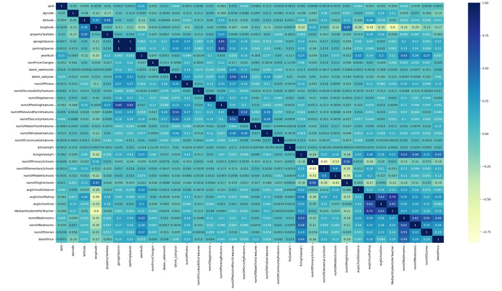
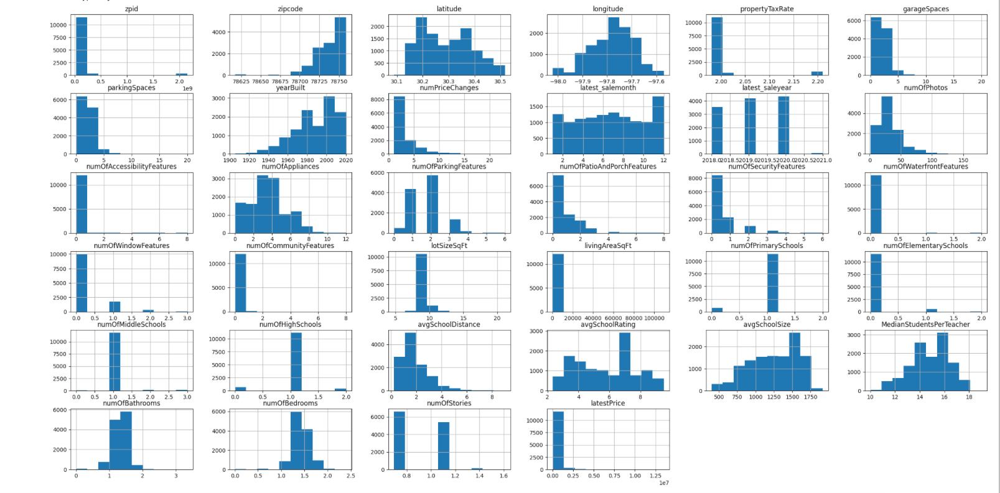
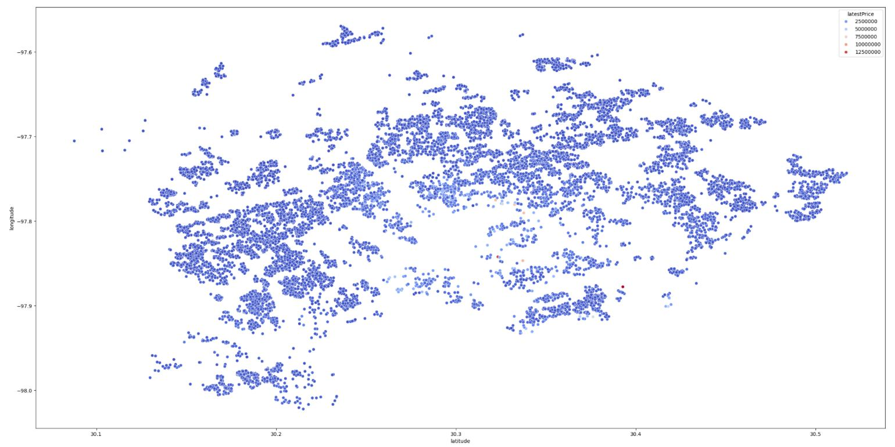

This heatmap provides a visual representation of all our dataset's features plotted against one another. Darker shades indicate higher densities or stronger relationships, allowing you to quickly identify patterns and correlations between different features.
This histogram offers a breakdown of the prevalence of each of our dataset's features. By displaying the frequency distribution, it allows us to quickly understand the distribution and central tendencies of each feature within the dataset.
This scatterplot provides a unique perspective on house prices by plotting them along latitude and longitude coordinates. This creates a geographic 'map' that vividly illustrates regional variations in house prices. By observing the concentration and spread of data points, we can identify areas where house prices are particularly high or low.
